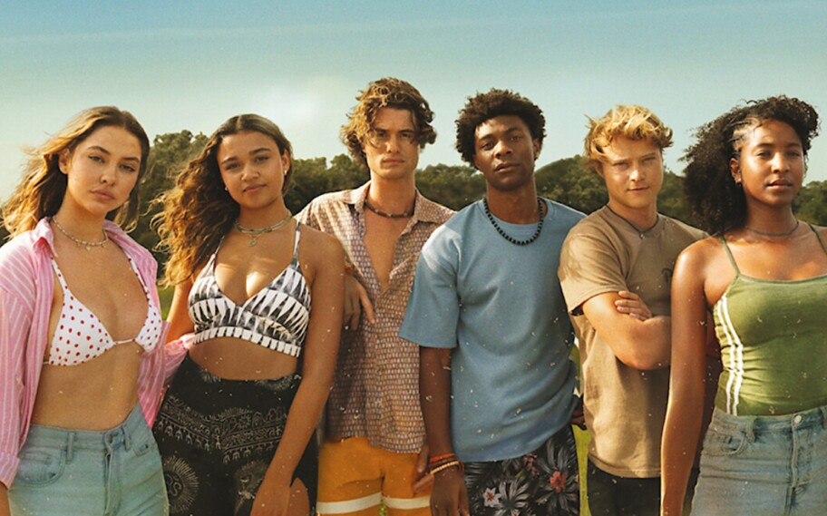
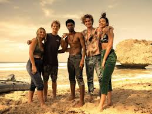
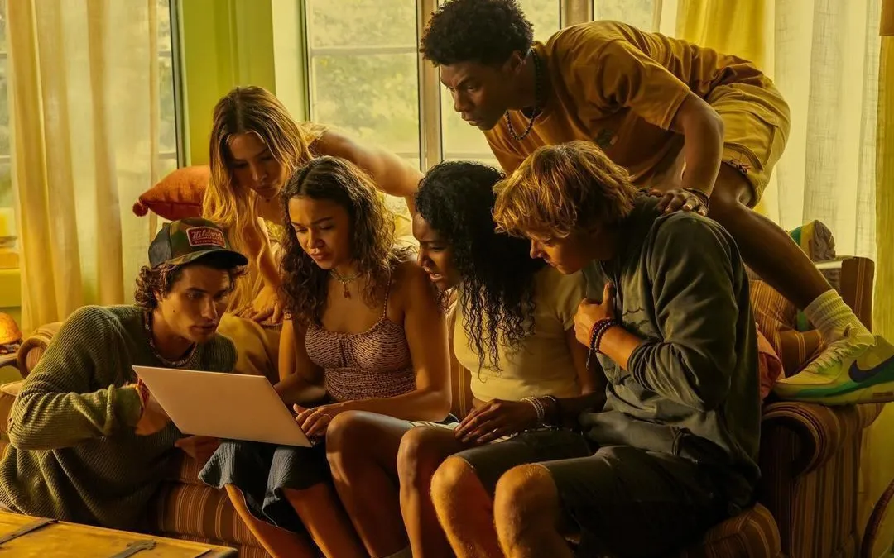

Trailer
Sinopse
Outer Banks é uma série de drama adolescente que se passa em uma cidade costeira na Carolina do Norte, onde há uma divisão social gritante entre os ricos residentes sazonais (os "Kooks") e os locais da classe trabalhadora (os "Pogues"). A história segue um grupo unido de adolescentes Pogues, liderados por John B, que embarcam em uma missão para descobrir o que aconteceu com o pai desaparecido de John B. Ao longo do caminho, eles se deparam com um tesouro lendário que está ligado ao pai de John B, o que os leva a uma aventura cheia de mistérios, perigos, romance e conflitos com os Kooks e outras ameaças.
Elenco
Imagens


